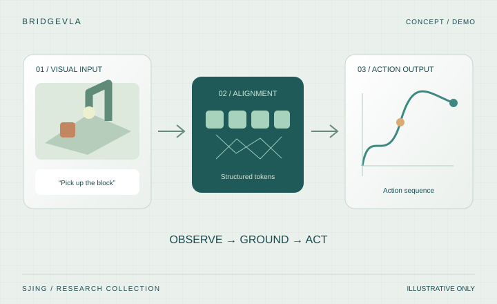
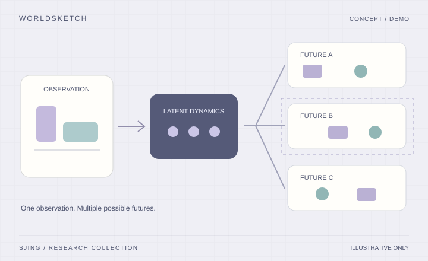
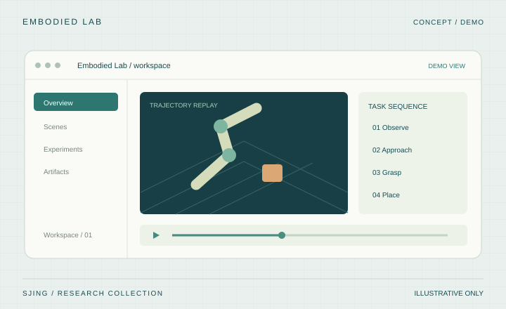
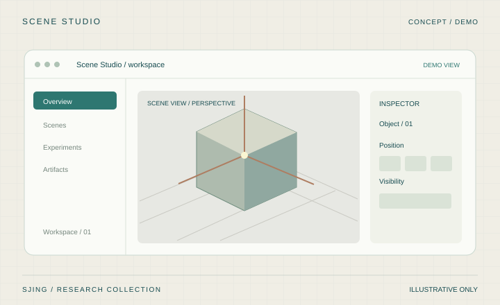

01 / PUBLICATIONS
论文发表
研究问题 · 方法 · 个人贡献

CVPR / 2026论文示例
用结构化视觉信息连接语言指令与机器人动作
SJing*, A. Chen*, M. Lin, Y. Zhou†
- 作者排位
- 共同一作 · 第 1 / 4 位
VLARoboticsMultimodal

ICLR / 2026论文示例
面向视觉规划的物体级潜空间动力学
A. Chen, SJing, R. Tang, M. Lin, Y. Zhou†
- 作者排位
- 第二作者 · 第 2 / 5 位
World ModelsPlanningDynamics

3DV / 2025论文示例
基于结构化高斯基元的可编辑场景重建
M. Lin, R. Tang, SJing, Y. Zhou†
- 作者排位
- 第三作者 · 第 3 / 4 位
3D VisionGaussian SplattingRendering
* 表示共同贡献，† 表示通讯作者。以上作者及排位均为示例。
02 / PROJECTS
项目实践
从研究原型到可交互的工具

RESEARCH TOOL / 2026项目示例
具身策略评测与实验管理平台
A. Chen, SJing, M. Lin, R. Tang
- 成员与角色
- 核心开发 · 第 2 / 4 位贡献者
PythonSimulationEvaluation

INTERACTIVE SYSTEM / 2025项目示例
可交互的三维重建与场景浏览工具
SJing, R. Tang, M. Lin
- 成员与角色
- 项目负责人 · 第 1 / 3 位贡献者
3D ReconstructionWebGLVisualization